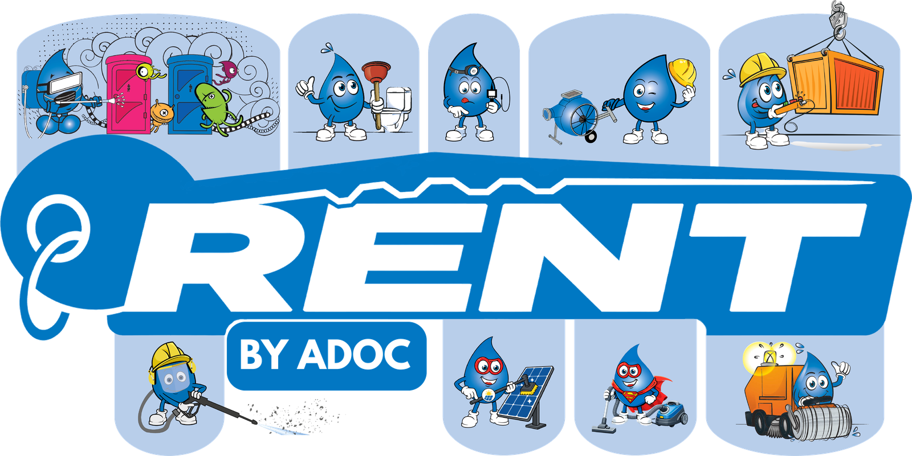
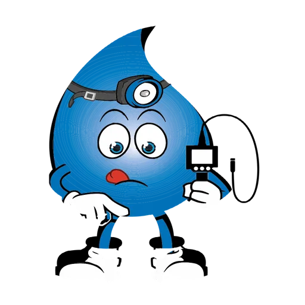
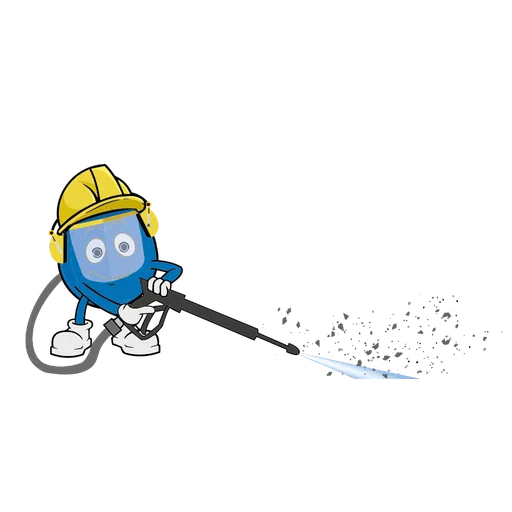
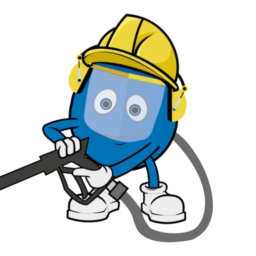
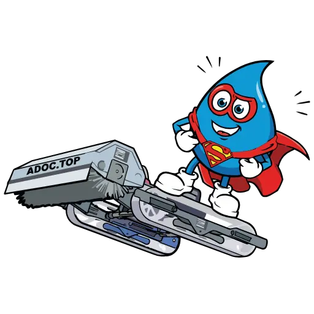

Location de matériel pour professionnels
Le parc technique d’ADOC, disponible à la location : pompes haute pression, matériel de génie civil, rénovation de canalisations, gestion des eaux et chaufferies mobiles. Pour les entreprises du bâtiment, des travaux publics et de l’assainissement.
Entremont · Martigny · Sion · Sierre · Villeneuve
Consulter le catalogueNotre matériel de location
-
 Aspiration et hydrocurage
Aspirateurs, camions de curage et de vidange, pompes et robots haute pression (300 à 3000 bar) pour l’aspiration, le curage, le décapage et l’hydrodémolition.
Aspiration et hydrocurage
Aspirateurs, camions de curage et de vidange, pompes et robots haute pression (300 à 3000 bar) pour l’aspiration, le curage, le décapage et l’hydrodémolition.
-

Canalisations, inspection et rénovation Robots fraiseurs, polymérisation UV, obturateurs et matériel de test pour l’inspection et la réhabilitation sans tranchée des canalisations. -

Eaux de chantier et pompage Bennes étanches, traitement du pH et unités de déshydratation pour gérer et traiter les eaux et les boues de chantier. -
 Génie civil, levage et transport
Pelles rétro, dumpers, bennes, pilonneuses, chargeuses, grues, nacelles, pick-up et balayeuse pour le terrassement, le levage, le transport et le nettoyage de voirie.
Génie civil, levage et transport
Pelles rétro, dumpers, bennes, pilonneuses, chargeuses, grues, nacelles, pick-up et balayeuse pour le terrassement, le levage, le transport et le nettoyage de voirie.
-
 Chauffage, ventilation et séchage
Chauffages, déshumidificateurs, extracteurs, purificateurs et chaufferies mobiles sur remorque pour l’assèchement, la ventilation et le chauffage temporaire de chantier.
Chauffage, ventilation et séchage
Chauffages, déshumidificateurs, extracteurs, purificateurs et chaufferies mobiles sur remorque pour l’assèchement, la ventilation et le chauffage temporaire de chantier.
-

Travaux spéciaux (ATEX comprise) Matériel et main-d’œuvre spécialisée pour les interventions en milieu confiné et atmosphère explosible (ATEX). -

Énergie et outillage Groupes électrogènes et compresseurs pour l’alimentation électrique autonome et l’air comprimé, petit outillage de chantier pour la démolition, le perçage et la finition.